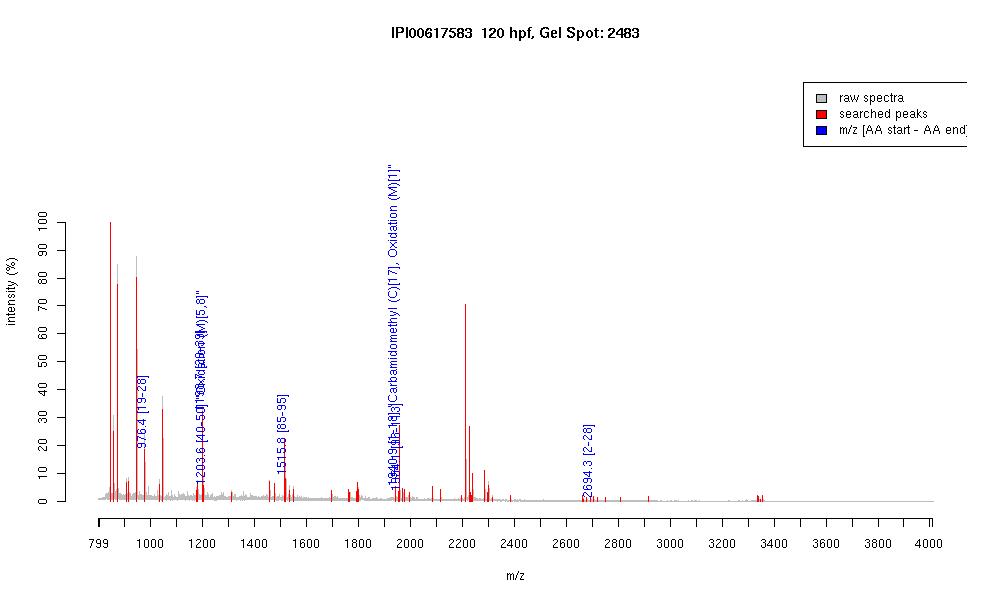

| Name | PREDICTED: similar to beta-cytoplasmic actin2 isoform 3 |
|---|---|
| MW | 14107 |
| PI | 5.45 |
| Mascot Protein Score | 75 |
| Masses (matched / unmatched) | 7 / 70 |

| Peptide | MZ (calc) | MZ (observed) | Error (DA) | Error (PPM) | Start | Stop | Modifications |
|---|---|---|---|---|---|---|---|
| AGFAGDDAPR | 976.4482 | 976.447 | -0.0012 | -1 | 19 | 28 | |
| AVFPSIVGRPR | 1198.7054 | 1198.705 | -0.0004 | 0 | 29 | 39 | |
| HQGVMVGMGQK | 1203.5609 | 1203.554 | -0.0069 | -6 | 40 | 50 | "Oxidation (M)[5,8]" |
| IWHHTFYNELR | 1515.7491 | 1515.7533 | 0.0042 | 3 | 85 | 95 | |
| MDDEIAALVVDNGSGMCK | 1940.8398 | 1940.9344 | 0.0946 | 49 | 1 | 18 | "Carbamidomethyl (C)[17], Oxidation (M)[1]" |
| VAPEEHPVLLTEAPLNPK | 1954.0643 | 1954.0508 | -0.0135 | -7 | 96 | 113 | |
| DDEIAALVVDNGSGMCKAGFAGDDAPR | 2694.2134 | 2694.2712 | 0.0578 | 21 | 2 | 28 |